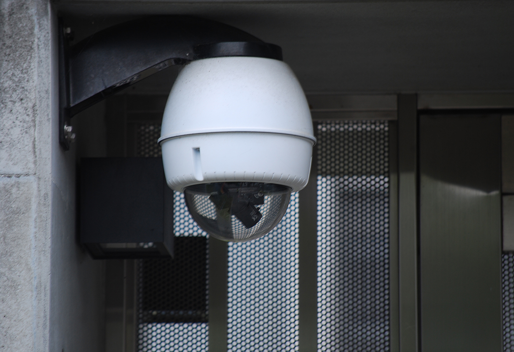
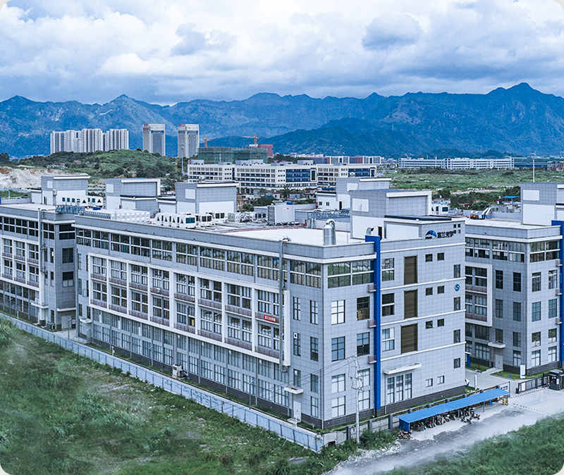
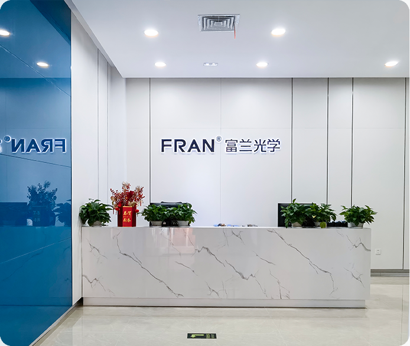

Security & Surveillance
Dome covers, lens shields and anti-scratch components for outdoor imaging systems.

Fran Optics delivers custom optical parts from prototype through mass production, with integrated capabilities in micro-nano machining, coating, precision assembly and full-process inspection.
Share your drawing, material, tolerance and expected quantity. Our engineering team can return an initial manufacturability review and RFQ path.
From surveillance domes to automotive sensing optics, we align material, coating and assembly decisions with real-world environmental constraints and performance requirements.

Dome covers, lens shields and anti-scratch components for outdoor imaging systems.

Optical geometries and coated parts for ADAS, in-cabin monitoring and lighting.
Free-form and compact optical elements for wearable and consumer electronic devices.
Precision optical parts for imaging, diagnostics and minimally invasive systems.
Durable optics for lidar, machine vision and industrial sensing deployments.
Our engineering and production teams operate as one delivery pipeline, reducing iteration cycles and improving scale-up reliability.

The following examples demonstrate geometry diversity, coating options and target use cases. Final specifications are customized per project.


Our quality approach focuses on repeatability, process discipline and clear communication with customer engineering teams.

Facility readiness and production layout for stable project ramp-up.

Corporate overview, organization and long-term manufacturing focus.
Cross-team workflow built to support OEM timelines and quality gates.
Send your specifications and project context. Fran Optics engineering will respond with a manufacturability-focused review path.
Submit RFQ